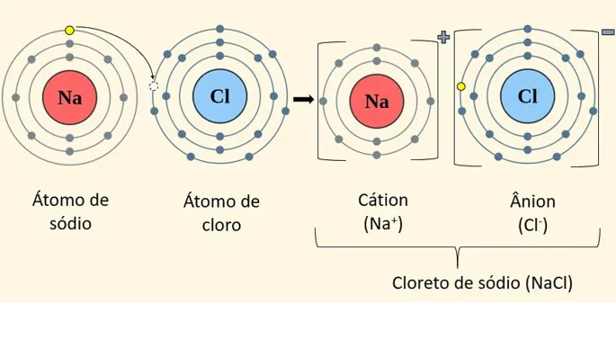
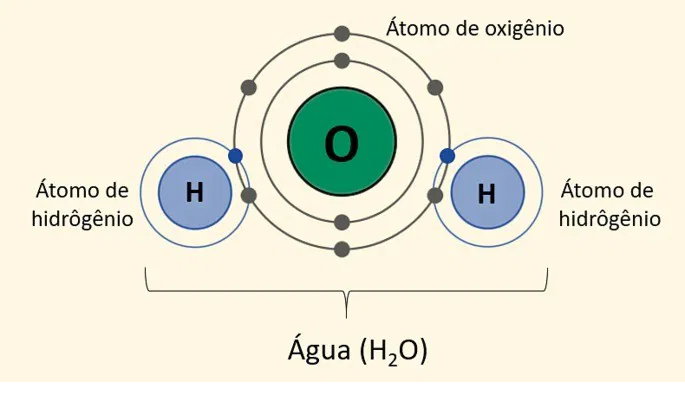

As ligações químicas correspondem à união dos átomos para a formação das substâncias químicas.
Em outras palavras, as ligações químicas acontecem quando os átomos dos elementos químicos
se combinam uns com os outros e os principais tipos são:
A Teoria do Octeto, criada por Gilbert Newton Lewis (1875-1946), químico estadunidense, e Walter Kossel (1888-1956), físico alemão,
surgiu a partir da observação dos gases nobres e algumas características como, por exemplo,
a estabilidade dos elementos que apresentam 8 elétrons na Camada de Valência.
Portanto, a Teoria ou Regra do Octeto explica a ocorrência das ligações químicas da seguinte forma:
Para tanto, o átomo procura sua estabilidade doando ou compartilhando elétrons com outros átomos, donde surgem as ligações químicas.
Vale lembrar que existem muitas exceções à Regra do Octeto, principalmente entre os elementos de transição.
Também chamada de ligação eletrovalente, esse tipo de ligação é realizada entre íons
(cátions e ânions), daí o termo "ligação iônica".
Para ocorrer uma ligação iônica os átomos envolvidos apresentam tendências opostas:
um átomo deve ter a capacidade de perder elétrons enquanto o outro tende a recebê-los.
Para ocorrer uma ligação iônica os átomos envolvidos apresentam tendências opostas:
um átomo deve ter a capacidade de perder elétrons enquanto o outro tende a recebê-los.
Portanto, um ânion, de carga negativa, se une com um cátion, de carga positiva,
formando um composto iônico por meio da interação eletrostática existente entre eles.
Na+Cl- = NaCl (cloreto de sódio ou sal de cozinha).
Nesse composto, o sódio (Na) doa um elétron para o cloro (Cl) e se torna um cátion (carga positiva),
enquanto o cloro torna-se um ânion (carga negativa).
Os compostos iônicos geralmente são encontrados no estado sólido em condições ambientes
e apresentam elevados pontos de fusão e ebulição. Quando dissolvidos em água
essas substâncias são capazes de conduzir corrente elétrica, já que seus íons são liberados em solução.
Também chamada de ligação molecular, as ligações covalentes são ligações em que
ocorre o compartilhamento de elétrons para a formação de moléculas estáveis,
segundo a Teoria do Octeto; diferentemente das ligações iônicas, em que
há perda ou ganho de elétrons.
Além disso, pares eletrônicos é o nome dado aos elétrons cedidos por
cada um dos núcleos, figurando o compartilhamento dos elétrons das
ligações covalentes.
H2O: H - O - H (molécula de água) formada por dois átomos de hidrogênio e um de oxigênio.
Cada traço corresponde a um par de elétrons compartilhado formando
uma molécula neutra, uma vez que não há perda nem ganho de elétrons nesse tipo de ligação.
Outros exemplos de substâncias formadas por ligações covalentes são: